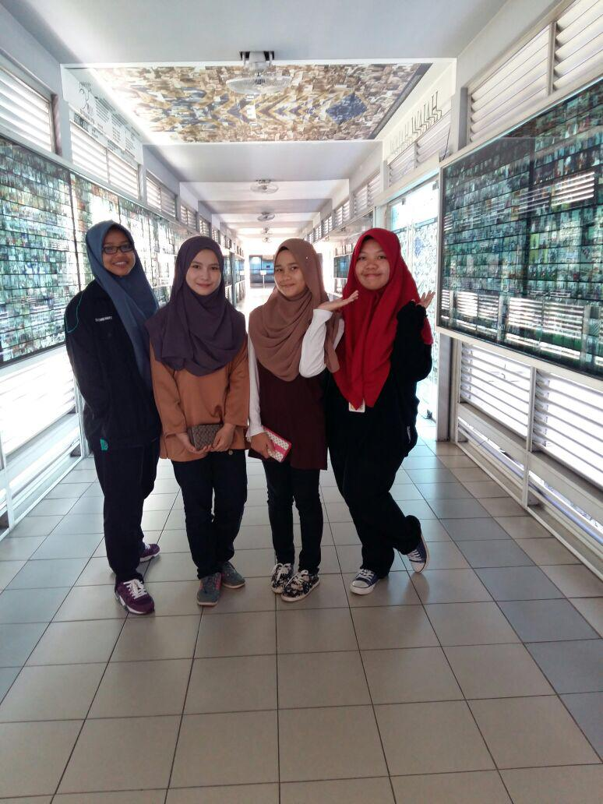
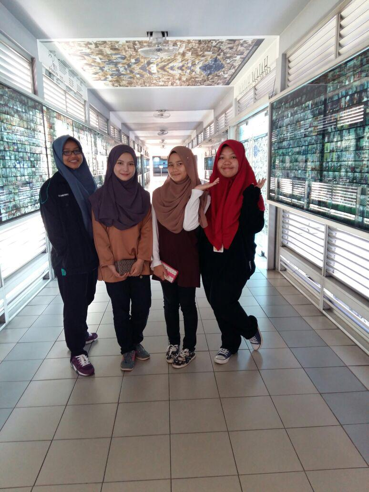
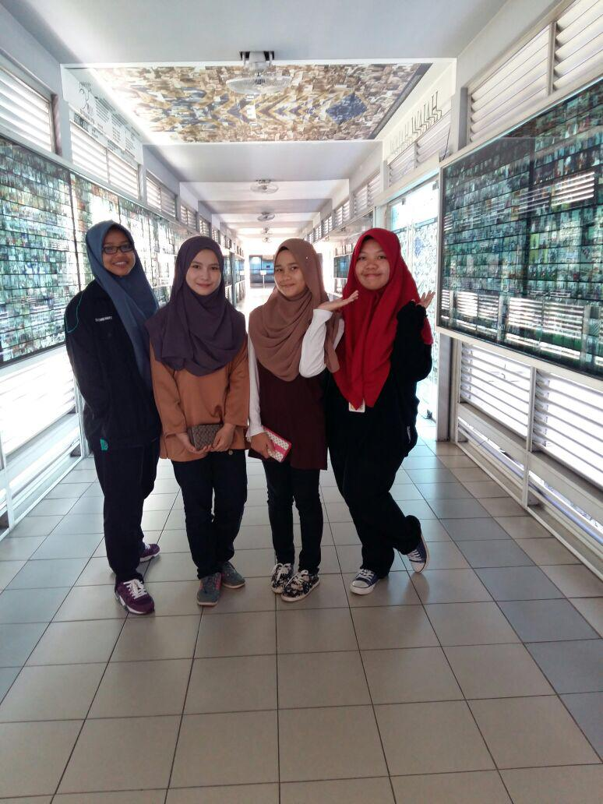

For education, during diploma I study at Uitm Kuala Pilah, Negeri Sembilan in Diploma of Technology Textile , Faculty of Applied Science. During my diploma journey they are many sweet and bitter memory that i have been through and it will be a memorable memory and the experience and knowledge when i was be there make me more matured in my life.
What is the best things during my diploma is that , every friday our class will be in Uitm Shah Alam. Due to the unsufficient of apparatus and machine in our Uitm Kuala Pilah, we need to attend our lab class in at Uitm Shah Alam. We have to get ready at 6 am every Friday to wait for the bus provided by uitm. The journey took 2 hours and although at first we felt tired but when it became a habit it was no longer a problem for us. It is also the most beautiful thing for me during the diploma because it can strengthen the friendship between seniors and juniors and I will share with you guys some memory when us at Uitm Shah Alam

Lastly, for degree education which is I'm currently studies in here which is Uitm Kota Bharu , Kelantan. During this period time i just not found friends here, but more than that which is family. We are very closes to each from the first semester we start until now eventhough we are in different course. So here i share the memory with them !
My journey for the education feel more happy with the presence of them in my life.
"Anything is possible when you have the right people there to support you,-Misty Copeland"!


 
